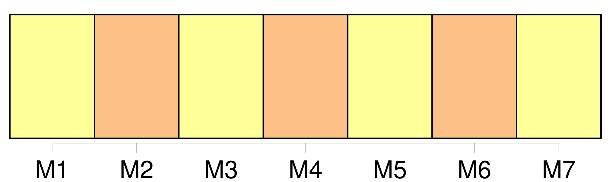

Longueur nb maillons : 13 mentions |
 |
[Le juge] [qui] refusera de juger sous prétexte du silence, de l'obscurité ou de l'insuffisance de la loi, pourra être poursuivi comme coupable de déni de justice. [1 phrases]
Il est défendu [aux juges] de prononcer par voie de disposition générale et réglementaire sur les causes qui [leur] sont soumises. [108 phrases]
Les registres seront cotés par première et dernière, et paraphés sur chaque feuille, par le président du tribunal de première instance, ou par [le juge] [qui] le remplacera. [10 phrases]
Les extraits délivrés conformes aux registres, et légalisés par le président du tribunal de première instance, ou par [le juge] [qui] le remplacera, feront foi jusqu'à inscription de faux. [443 phrases]
Si le mari refuse d'autoriser sa femme à ester en jugement, [le juge] peut donner l'autorisation. [6 phrases]
Lorsque le mari est frappé d'une condamnation emportant peine afflictive ou infamante, encore qu'elle n'ait été prononcée que par contumace, la femme, même majeure, ne peut, pendant la durée de la peine, ester en jugement, ni contracter, qu'après s'être fait autoriser par [le juge] , [qui] peut, en ce cas, donner l'autorisation, sans que le mari ait été entendu ou appelé. [1 phrases]
Si le mari est interdit ou absent, [le juge] peut, en connaissance de cause, autoriser la femme, soit pour ester en jugement, soit pour contracter. [3 phrases]
Si le mari est mineur, l'autorisation [du juge] est nécessaire à la femme, soit pour ester en jugement, soit pour contracter. |

|
Il est possible de télécharger la ressource sur la page Ortolang |
Si vous avez des questions ou vous voyez des erreurs, merci d'envoyer un mail à silvia.federzoni89@gmail.com |